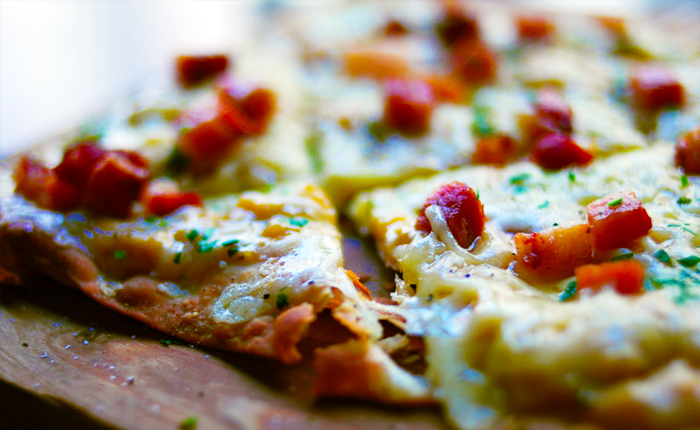
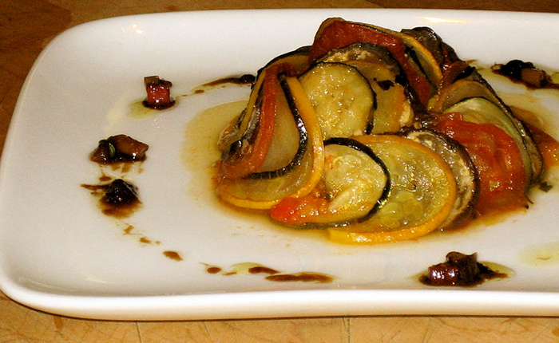

FRENCH FOOD
CASSOULET
Cassoulet is a comfort dish of white beans stewed slowly with meat, typically pork or duck but also sausages, goose, mutton or whatever else the chef has around. This peasant dish originates from southern France and is popular in Toulouse, Carcassonne and Castelnaudary. The name of the dish comes from the pot (cassole) it’s traditionally baked in, which is typically shaped like an inverted cone to give a crust shape. This is a rich, hearty meal perfect for colder months.
View Recipe
CHOCOLATE SOUFFLE
The word soufflé derives from the French verb to ‘blow out’ and is an airy, egg-baked dish with origins dating back to early 18th-century France. Soufflé is eaten savoury or sweet in France, and you’ve likely found chocolate soufflé on dessert menus worldwide. The crispy chocolate crust with an oozing, creamy chocolate centre gives this dessert a sweet surprise.
View Recipe

FLAMICHE
Flamiche means ‘cake’ in Flemish and this dish originates from northern France, near the border with Belgium. It has a puff-pastry crust filled with cheese and vegetables and resembles a quiche. The traditional French filling is with leeks and cream. There is also a pizza-like version of flamiche, which is without the top crust of the pie. For a southern French twist, try the thin crusty pissaladière which is topped with anchovies, onions and olives.
View Recipe
 NICOISE SALAD
Salade niçoise is a typical French salad from the Provence region, which can be served as a side dish or a light meal on its own. It’s typically a combination of lettuce, fresh tomatoes, boiled eggs, (canned or fresh) tuna, green beans, Nicoise Cailletier olives and anchovies, although many variations exist.
View Recipe
NICOISE SALAD
Salade niçoise is a typical French salad from the Provence region, which can be served as a side dish or a light meal on its own. It’s typically a combination of lettuce, fresh tomatoes, boiled eggs, (canned or fresh) tuna, green beans, Nicoise Cailletier olives and anchovies, although many variations exist.
View Recipe

RATATOUILLE
Ratatouille is another internationally recognised French dish, hailing from the southeastern French region of Provence. It is a stewed vegetable recipe that can be served as a side dish, meal or stuffing for other dishes, such as crepes and omelettes. The vegetables are generally first cooked in a shallow pan on a high heat with a small amount of fat, and then oven-baked in a dish. French chefs continually debate the correct way to cook ratatouille: some do not agree with sauteing all the vegetables together, such as Julia Child, and argue that the vegetables should be cooked separately and layered into a baking dish. The ingredients consist of tomatoes, garlic, onions, zucchini, eggplant, carrots, bell peppers, basil, marjoram, thyme and other green herbs. A similar dish popular in the French Basque country is piperade, which typically adds ham and sometimes eggs to the stewed vegetable mix.
View Recipe